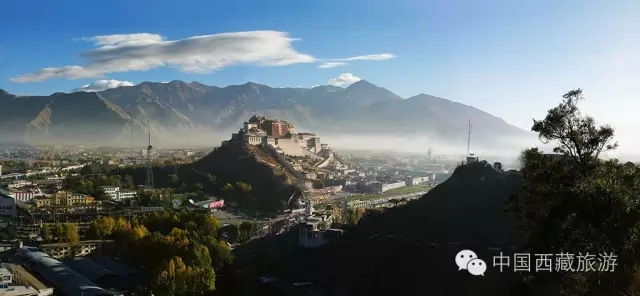
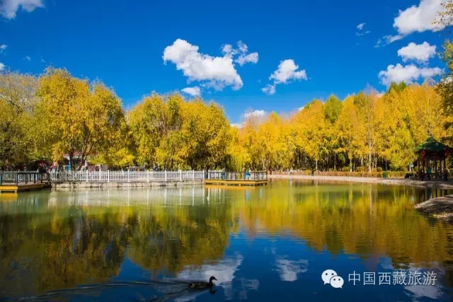
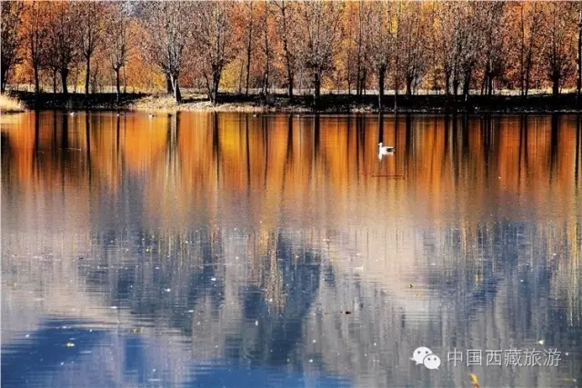
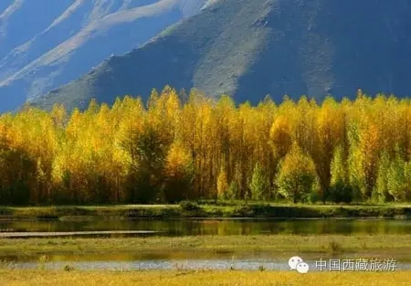

中国西藏信息网

傍晚，古城天气放晴，放眼望去，周边群山绿意盎然。
“我们刚从达东村回来。”家住拉萨的赵女士，是名“林卡爱好者”。来拉萨的几年时间里，她最喜欢做的事就是寻觅风景秀丽的地方过林卡。她说，达东村是拉萨附近过林卡的绝佳去处，不但山美、水美、花美，而且在每一处景致里，种种为游客规划的基础设施和贴心服务，更是让她眼前一亮。“这既方便了游客，也保护了环境和生物的多样性。”赵女士说。

生物多样性作为生命系统的基本特征，是实现绿水青山的重要前提，是重要的战略资源，是经济社会可持续发展的基础。西藏是全球高海拔生物多样性最丰富的区域，有“高寒生物自然种质库”之称，在全球生物多样性保护中具有重要战略地位，对维护我国生物多样性具有不可替代的作用。
长期以来，西藏自治区党委、政府坚决贯彻落实党中央、国务院决策部署，始终坚持将生态环境保护工作作为全区经济社会发展的底线、红线、高压线，以最坚决的态度、最严格的制度、最有力的措施，积极推进生态文明建设，努力构建国家生态安全屏障，加快建设美丽西藏。

“西藏以浑厚的高原气息、独树一帜的民俗风情和无与伦比的自然环境雄踞世界屋脊，是众多游客一生向往的旅游目的地。”来自北京的游客于女士说，十几年间，来西藏七次，每一次的感受都不相同。“西藏这些年的发展是非常快的——柏油路越修越好，一座座高楼拔地而起，还有美丽的花园，让古老的城市不断焕发出青春的活力。”
“十三五”时期，在西藏与全国一道全面建成小康社会的决胜期、构建西藏生态安全屏障的攻坚期，西藏将坚持节约资源和保护环境的基本国策，坚持走绿色发展道路，形成绿色发展方式和生活方式，促进人与自然和谐，确保生态环境良好，保障国家生态安全。坚定不移实施主体功能区战略，健全空间规划体系，合理布局和整治生产空间、生活空间和生态空间。保护自然景观，尊重自然格局，依托现有山水脉络、气象条件，合理布局城镇各类空间，尽量减少对自然的干扰和破坏。实行绿色规划、设计、施工标准，实施生态廊道建设和生态系统修复工程，建设绿色城市，加强生活污水、生活垃圾等污染防治，强化山水林田路综合治理。开展生态文明示范村镇建设行动和农村人居环境综合整治行动，建设田园牧歌、秀山丽水、和谐幸福的美丽宜居乡村。

“来西藏两年了，无比喜欢这里的蓝天和太阳。感觉在这里，一切都是那么明媚和清澈，这里的百姓善良淳朴，每一份笑容都发自内心。”英章是一名来自四川甘孜的西部志愿者。她说，之前就很向往西藏，随着时间的流逝，越来越喜欢这里。这里阳光明媚，空气纯净，舒缓身心的同时，也净化了心灵，相信西藏的明天会更美好。
迄今为止，西藏仍然是世界上环境质量最好的地区之一。全区大部分森林、江河、湖泊、草场、湿地、冰川、雪山和野生动植物等都得到了较好的保护，全区的水、气、声、土壤、辐射及生态环境质量均保持在良好状态，大部分区域仍处于原生状态，呈现着碧水蓝天和广袤的草原，让更多的人漫步在美丽的画卷中，显露出美好的笑容。